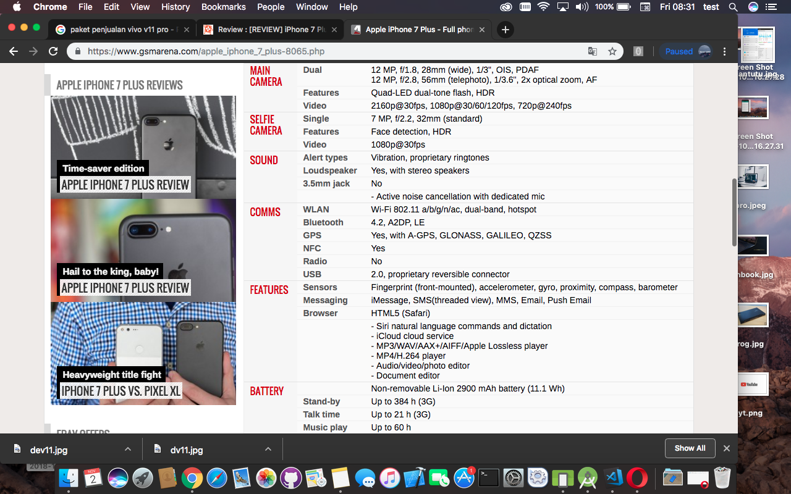
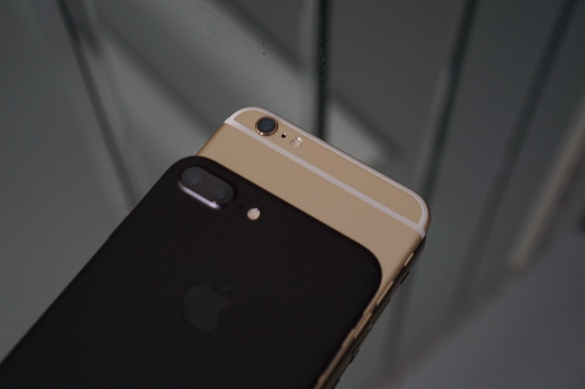
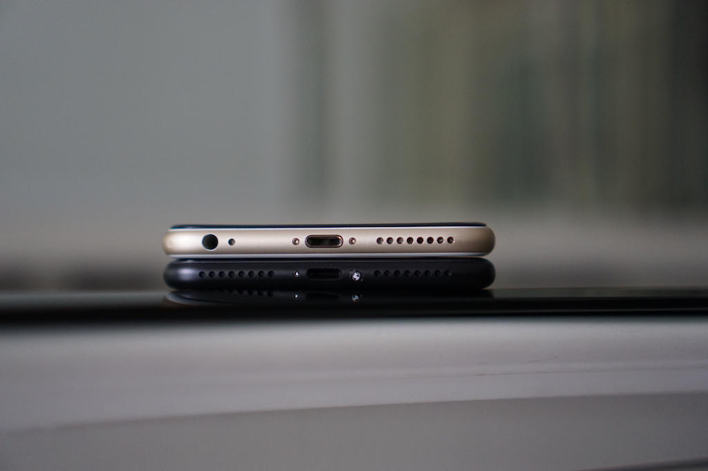

iPhone 7 Plus Jet Black yang Kru KotGa ulas kali ini merupakan seri tertinggi di seri iPhone generasi terbaru. Meski mengusung dapur pacu yang sama dengan iPhone 7. iPhone 7 Plus membawa layar dan kapasitas RAM yang lebih besar. Selain itu untuk pertama kalinya Apple juga membekali iPhone 7 Plus Jet Black dengan kamera ganda yang diklaim mampu menghasilkan foto dengan kualitas terbaik. Sama halnya dengan iPhone 7, iPhone 7 Plus Jet Black juga dibekali dengan sertifikasi IP67 yang membuat smartphone andalan Apple ini tahan debu dan air hingga kedalaman 1 meter.
 DesainPerbedaan pertama yang langsung terlihat ada pada cara Apple meletakkan iPhone dalam bungkus. Kini ponsel ditaruh di bawah buku manual dan stiker, mungkin untuk mencegah agar ponsel tak mudah terjatuh saat dus dibuka. Desain yang diusung oleh iPhone 7 Plus ini tidak mengalami perubahan dari dua ponsel pendahulunya. Berarti sudah tiga generasi, Apple tidak mengubah desain dan bentuk iPhone sama sekali. Bahkan kover tambahan untuk iPhone 6s Plus masih bisa digunakan pada iPhone 7 Plus. Satu-satunya perubahan desain yang kasatmata ada pada bagian belakang. Apple kali ini membuang garis antena horizontal yang biasanya terletak di sisi atas dan bawah iPhone. Apple menggunakan material yang sama dengan iPhone 6s dan 6s Plus, yakni aluminium A7000 yang diyakini lebih kuat dan kokoh. Namun, menurut penilaian kami ketika menggunakan iPhone 6s Plus, casing lebih rentan penyok jika terjatuh atau terbentur dibandingkan iPhone 6 dan 6 Plus. Black Matte adalah warna terbaru iPhone yang baru diperkenalkan pada iPhone 7 dan 7 Plus.
Satu lagi yang baru pada iPhone 7 Plus adalah kamera ganda yang dipasang pada bagian belakang. Memang teknologi ini sudah lebih dulu digunakan beberapa ponsel Android tetapi bagi Apple inilah iPhone pertama yang mengadopsi teknologi itu. Apple juga menyematkan prosesor terbaru yang diklaim lebih cepat dan bertenaga, serta fitur-fitur terbaru yang akan kami ulas lebih detail nanti.
Selain garis antena yang dihilangkan, Apple juga menyingkirkan lubang jack 3,5mm yang biasanya digunakan untuk headset. Keputusan ini termasuk revolusioner dan Apple sudah menyediakan headset nirkabel Airpods sebagai pendamping iPhone 7. Lalu di tombol home, Apple menggunakan teknologi baru yang hanya ada di iPhone 7 dan 7 Plus. Tombol pada kedua ponsel terbaru ini tidak akan benar-benar bisa diklik. Walau demikian tombol ini sensitif terhadap tekanan, termasuk apa yang disebut "taptic feedback" dan "haptic feedback". Sederhananya, tombol ini bisa mengenali tiga tingkat tekanan yang berbeda.' Untuk pengguna yang sudah terbiasa menggunakan tombol home di generasi iPhone sebelumnya, butuh waktu lagi untuk terbiasa menggunakannya.
LayarBagian ini juga yang menjadi keunggulan iPhone 7 Plus. Memang jika dilihat sekilas tak ada yang beda dibandingkan iPhone 6s Plus. Keduanya menggunakan layar 5,5 inci beresolusi 1080x1920 piksel. Namun, jika ditelisik lebih teliti, Apple meningkatkan tingkat kecerahan layar hingga 25 persen sehingga tampak lebih terang dan jelas. Selain itu, ada juga peningkatan warna gamut yang lebih luas (P3) dan manajemen warna. Agak disayangkan Apple tak menggunakan layar 2K (1440x2560 piksel) yang sudah populer pada gawai Android. Meski begitu, layar tersebut memiliki kualitas retina display dengan kepadatan 401 piksel per inci dan tetap dilengkapi fitur 3D Touch yang akan mempermudah pengoperasian aplikasi. Di samping itu ada pula fitur Display Zoom dan lapisan pelindung antigores berupa ion-strengthened glass dan lapisan oleophobic yang membuat layar ponsel takkan terkotori minyak.
AntarmukaTampilan Antarmuka iPhone 7 Plus tidak ada perbedaan dengan iPhone 6s Plus, semua terlihat sederhana dengan ikon-ikon yang berjejer rapi. Di iPhone terbaru ini, Apple membenamkan langsung sistem operasi terbaru mereka, yakni iOS 10. Tampilan layar kunci kini juga telah didesain ulang. Selain membawa fungsi "raise to wake", kini mengakses kamera juga jadi lebih mudah. Cukup geser ke kiri pada layar kunci dan Anda akan langsung bisa memakai kamera. Sementara jika menggeser ke kanan, Anda akan diarahkan ke layar atau laman widget. Hal ini cukup menarik mengingat Android sudah mulai membuang fungsi widget, Apple malah memunculkannya kembali. Di iOS 10, Apple juga memperkenalkan widget terbaru yang bisa digunakan untuk melihat informasi-informasi dari aplikasi yang ada di layar kunci. Selain itu, notifikasi yang muncul di layar kunci juga jadi lebih interaktif. Pengguna iPhone 6s dan 6s Plus bisa menampilkan informasi-informasi konten dengan memanfaatkan fitur 3D Touch, seperti yang ada di aplikasi ESPN. Untuk menggunakannya sangat mudah, Anda hanya tinggal klik widget tersebut dan geser ke kiri hingga muncul informasi tersebut. Area notifikasi juga sudah didesain ulang, dengan kotak notifikasi dan widget yang dibuat bernuansa gelembung. Control Center juga dibagi jadi dua panel berbeda, dengan satu panel untuk toggle dan satu lagi untuk kontrol musik. Ikon dan material desain lainnya juga dibuat bernuansa gelembung
PerformaBeralih ke bagian dapur pacu, sebanding dengan harga iPhone 7 Plus yang menembus angka puluhan juta, ponsel ini telah dibekali prosesor Apple A10 Fusion berkecepatan quad-core 2,23 Ghz. Apple sendiri menjanjikan prosesor A10 memiliki performa 40 persen lebih bertenaga dibandingkan A9 yang dimiliki iPhone 6s dan 6s Plus. Selain itu, performa tersebut semakin diperkuat dengan disematkannya RAM 3GB.
Sementara untuk performa grafisnya juga ada peningkatan sebesar 50 persen, sehingga tak heran apabila performa prosesor A10 ini dapat disetarakan dengan performa prosesor pada sebuah komputer PC. Bahkan spesifikasi yang diusung pun bisa melibas semua ponsel pesaingnya yang menggunakan sistem operasi Android. Untuk membuktikan itu, kami melakukan benchmark menggunakan AnTuTu untuk menguji kemampuan iPhone 7 Plus jika dibandingkan salah satu produk flagship Android, OnePlus 3 dengan RAM 6GB. Hasilnya, OnePlus 3 mencapai skor 140298, jauh di bawah 182559 poin yang diraih iPhone 7 Plus. Padahal iPhone 7 Plus hanya menggunakan RAM 3GB.
KameraUntuk pertama kalinya dalam sejarah Apple, iPhone 7 Plus hadir dengan kamera ganda di belakang. Kamera pertama dibekali lensa wide angle 12MP dengan lensa 28 mm (ekuivalenfull-frame) f/1.8 dan lensa kedua dengan lensa "tele" 56 mm f/2.8 yang digunakan untuk mendekatkan objek jarak jauh (close-up). Selain itu, kamera belakang ini juga diengkapi dengan fitur standar layaknya kamera ponsel seperti OIS, PDAF (Phase Detection Autofocus), dan 4 LED flash yang diklaim mampu menghasilkan cahaya 50 persen lebih banyak. Kamera kedua dengan lensa 56 mm itu memungkinkan pengguna melakukan zoom secara optik hingga 2x pada subyek tanpa mengorbankan ketajaman gambar seperti yang terjadi pada teknik digital zoom. Kamera pada iPhone 7 Plus ini juga sudah dilengkapi OIS (Optical Image Stabilizer), sebelumnya hanya iPhone 6s Plus saja yang sudah mengadopsi OIS, iPhone 6s tidak. Salah satu fitur terbaru yang ada di kamera belakang iPhone 7 dan iPhone 7 Plus adalah Image Signal Processor (ISP) yang tertanam di cip A10. Dengan ISP, setiap kali Anda mengambil foto atau video, ISP akan memproses sekitar 100 miliar operasi dan kemudian deep machine akan memilih gambar yang paling bagus.
Dua kamera ini juga bisa digunakan untuk mendapatkan DoF (Depth of Field) yang lebih tipis atau lazim disebut dengan istilah buram (bokeh) yang lebih bagus. Jika Anda sudah memiliki iPhone 7 Plus, Anda sudah bisa mencoba mode portrait yang ada di kamera, tentunya harus mengunduh firmware terbaru yang dikhususkan untuk developer
Sistem kamera dengan bukaan f/1.8 yang bisa menghasilkan efek 'bokeh' sebenarnya sudah pernah diaplikasikan di perangkat ponsel besutan LG, yaitu G4. Ya, G4 merupakan ponsel pertama yang menyediakan mode manual dengan bukaan f/1.8, kemudian diikuti oleh perusahaan ponsel lainnya. Buat pencinta fotografi, efek 'bokeh' yang dihasilkan dua kamera iPhone 7 Plus tampaknya bisa diandalkan. Ponsel tersebut memiliki mesin yang dapat mengenali wajah manusia, membidik objek dengan membiarkan bagian latar belakang objek tampak kabur. Namun sayangnya lensa kedua pada kamera belakang tidak selalu bisa digunakan. Ponsel akan menonaktifkan kamera dengan lensa 56 mm tersebut dalam kondisi tertentu. Lebih tepatnya, ponsel ini hanya akan memakai kamera wide angle saat memotret dalam situasi minim cahaya. Alih-alih mengaktifkan kamera kedua, ketika pengguna melakukan zooming dalam kondisi rendah cahaya, ponsel akan melakukan digital zoom.
Demikian juga yang terjadi apabila pengguna mencoba memotret subjek yang berada dalam jarak sangat dekat. Hal ini dijelaskan oleh Vice President Worldwide Marketing Apple, Phil Schiller lewat Twitter untuk menanggapi sebuah pertanyan dari pengguna. "Dalam kondisi low-light (atau macro 10 cm), dual camera (iPhone 7 Plus) mungkin akan memakai lensa wide angle 28 mm f/1.8 OIS untuk mengambil gambar terbaik," kicau Schiller. Sedangkan untuk kamera depannya, Apple juga memberikan peningkatan yang luar biasa, dari yang sebelumnya hanya 5MP menjadi 7MP di kedua perangkat baik iPhone 7 maupun iPhone 7 Plus. Kamera tersebut memiliki bukaan f/2.2, penstabil gambar otomatis, dan mampu merekam video dengan kualitas 1080p.